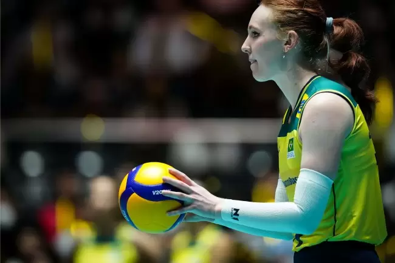

Thiago Pereira 2024 - © Todos os direitos reservados
Trabalho acadêmico sem fins lucrativos

Júlia Bergmann brilha no vôlei de praia, destacando-se por seu talento e habilidades impressionantes. Sua trajetória no esporte é marcada por conquistas significativas e características notáveis. Desde cedo, Júlia mostrou um domínio técnico admirável no vôlei de praia. Ela se destaca em todos os aspectos do jogo, do saque à recepção, passando pelo levantamento e ataque. Sua agilidade e velocidade em quadra são notáveis, permitindo que ela se posicione com precisão e responda rapidamente aos movimentos dos adversários. Mais do que isso, sua habilidade de trabalhar em equipe é um grande trunfo. No vôlei de praia, onde a comunicação e a colaboração com o parceiro são essenciais, Júlia se destaca pela sua capacidade de se conectar e coordenar com seu companheiro de equipe. A lista de conquistas de Júlia é muito grande. Ela acumula diversos títulos em competições, tanto no Brasil quanto no cenário internacional. Seus desempenhos em torneios importantes, como o Circuito Brasileiro de Vôlei de Praia e o World Tour da FIVB (Federação Internacional de Vôlei), são uma prova de sua dedicação e talento. Seus esforços foram bastante reconhecidos com prêmios e homenagens, consolidando sua posição como uma das grandes estrelas do esporte. Por trás de suas vitórias, há um regime de treinamento intenso e cuidadoso. Júlia não apenas se dedica ao preparo físico específico para o vôlei de praia, mas também investe no desenvolvimento psicológico, essencial para lidar com a pressão das competições. Sua capacidade e confiança são o resultado de um trabalho duro e contínuo. Além de suas realizações pessoais, Júlia é uma verdadeira fonte de inspiração para muitos jovens atletas. Seu sucesso e comprometimento no vôlei de praia não só a destacam no cenário esportivo, mas também motivam novas gerações a perseguirem seus sonhos com paixão e determinação. Sua trajetória é um exemplo brilhante de como a dedicação e o amor pelo que se faz podem transformar vidas e inspirar os outros.
Thiago Pereira 2024 - © Todos os direitos reservados
Trabalho acadêmico sem fins lucrativos